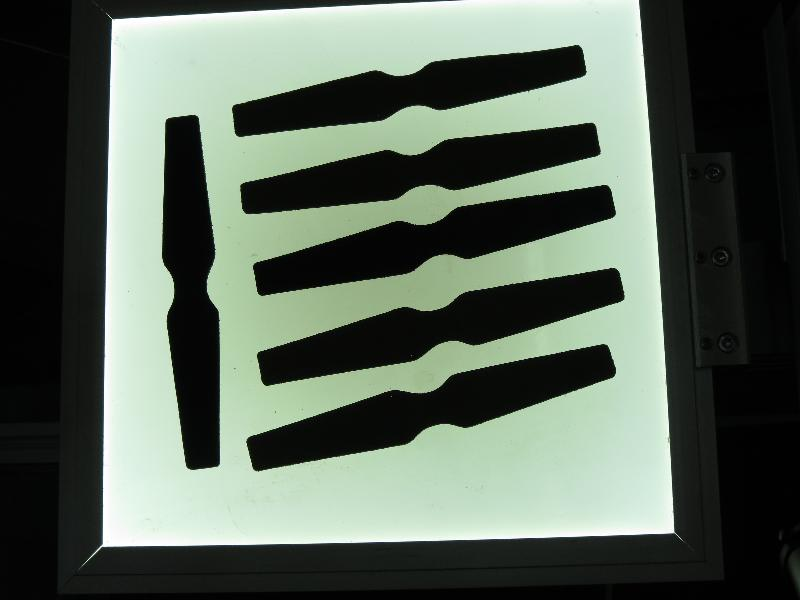

Introduction to Principal Component Analysis (PCA)
Goal
In this tutorial you will learn how to:
- Use the OpenCV class cv::PCA to calculate the orientation of an object.
What is PCA?
Principal Component Analysis (PCA) is a statistical procedure that extracts the most important features of a dataset.

Consider that you have a set of 2D points as it is shown in the figure above. Each dimension corresponds to a feature you are interested in. Here some could argue that the points are set in a random order. However, if you have a better look you will see that there is a linear pattern (indicated by the blue line) which is hard to dismiss. A key point of PCA is the Dimensionality Reduction. Dimensionality Reduction is the process of reducing the number of the dimensions of the given dataset. For example, in the above case it is possible to approximate the set of points to a single line and therefore, reduce the dimensionality of the given points from 2D to 1D.
Moreover, you could also see that the points vary the most along the blue line, more than they vary along the Feature 1 or Feature 2 axes. This means that if you know the position of a point along the blue line you have more information about the point than if you only knew where it was on Feature 1 axis or Feature 2 axis.
Hence, PCA allows us to find the direction along which our data varies the most. In fact, the result of running PCA on the set of points in the diagram consist of 2 vectors called eigenvectors which are the principal components of the data set.
The size of each eigenvector is encoded in the corresponding eigenvalue and indicates how much the data vary along the principal component. The beginning of the eigenvectors is the center of all points in the data set. Applying PCA to N-dimensional data set yields N N-dimensional eigenvectors, N eigenvalues and 1 N-dimensional center point. Enough theory, let’s see how we can put these ideas into code.
How are the eigenvectors and eigenvalues computed?
The goal is to transform a given data set X of dimension p to an alternative data set Y of smaller dimension L. Equivalently, we are seeking to find the matrix Y, where Y is the Karhunen–Loève transform (KLT) of matrix X :
Organize the data set
Suppose you have data comprising a set of observations of p variables, and you want to reduce the data so that each observation can be described with only L variables, L <p. Suppose further, that the data are arranged as a set of n data vectors \(x_1...x_n\) with each \(x_i\) representing a single grouped observation of the p variables.
- Write \(x_1...x_n\) as row vectors, each of which has p columns.
- Place the row vectors into a single matrix X of dimensions \(n\times p\).
Calculate the empirical mean
Find the empirical mean along each dimension \(j = 1, ..., p\).
Place the calculated mean values into an empirical mean vector u of dimensions \(p\times 1\).
\[\mathbf{u[j]} = \frac{1}{n}\sum_{i=1}^{n}\mathbf{X[i,j]}\]
Calculate the deviations from the mean
Mean subtraction is an integral part of the solution towards finding a principal component basis that minimizes the mean square error of approximating the data. Hence, we proceed by centering the data as follows:
Subtract the empirical mean vector u from each row of the data matrix X.
Store mean-subtracted data in the \(n\times p\) matrix B.
\[\mathbf{B} = \mathbf{X} - \mathbf{h}\mathbf{u^{T}}\]where h is an \(n\times 1\) column vector of all 1s:
\[h[i] = 1, i = 1, ..., n\]
Find the covariance matrix
Find the \(p\times p\) empirical covariance matrix C from the outer product of matrix B with itself:
\[\mathbf{C} = \frac{1}{n-1} \mathbf{B^{*}} \cdot \mathbf{B}\]where * is the conjugate transpose operator. Note that if B consists entirely of real numbers, which is the case in many applications, the “conjugate transpose” is the same as the regular transpose.
Find the eigenvectors and eigenvalues of the covariance matrix
Compute the matrix V of eigenvectors which diagonalizes the covariance matrix C :
\[\mathbf{V^{-1}} \mathbf{C} \mathbf{V} = \mathbf{D}\]where D is the diagonal matrix of eigenvalues of C.
Matrix D will take the form of an \(p \times p\) diagonal matrix:
\[\begin{split}D[k,l] = \left\{\begin{matrix} \lambda_k, k = l \\ 0, k \neq l \end{matrix}\right.\end{split}\]here, \(\lambda_j\) is the j -th eigenvalue of the covariance matrix C
Matrix V, also of dimension p x p, contains p column vectors, each of length p, which represent the p eigenvectors of the covariance matrix C.
The eigenvalues and eigenvectors are ordered and paired. The j th eigenvalue corresponds to the j th eigenvector.
sources [1], [2] and special thanks to Svetlin Penkov for the original tutorial.
Source Code
This tutorial code’s is shown lines below. You can also download it from here.
#include <iostream> #include <opencv2/opencv.hpp> using namespace std; using namespace cv; // Function declarations void drawAxis(Mat&, Point, Point, Scalar, const float); double getOrientation(const vector<Point> &, Mat&); void drawAxis(Mat& img, Point p, Point q, Scalar colour, const float scale = 0.2) { double angle; double hypotenuse; angle = atan2( (double) p.y - q.y, (double) p.x - q.x ); // angle in radians hypotenuse = sqrt( (double) (p.y - q.y) * (p.y - q.y) + (p.x - q.x) * (p.x - q.x)); // double degrees = angle * 180 / CV_PI; // convert radians to degrees (0-180 range) // cout << "Degrees: " << abs(degrees - 180) << endl; // angle in 0-360 degrees range // Here we lengthen the arrow by a factor of scale q.x = (int) (p.x - scale * hypotenuse * cos(angle)); q.y = (int) (p.y - scale * hypotenuse * sin(angle)); line(img, p, q, colour, 1, CV_AA); // create the arrow hooks p.x = (int) (q.x + 9 * cos(angle + CV_PI / 4)); p.y = (int) (q.y + 9 * sin(angle + CV_PI / 4)); line(img, p, q, colour, 1, CV_AA); p.x = (int) (q.x + 9 * cos(angle - CV_PI / 4)); p.y = (int) (q.y + 9 * sin(angle - CV_PI / 4)); line(img, p, q, colour, 1, CV_AA); } double getOrientation(const vector<Point> &pts, Mat &img) { //Construct a buffer used by the pca analysis int sz = static_cast<int>(pts.size()); Mat data_pts = Mat(sz, 2, CV_64FC1); for (int i = 0; i < data_pts.rows; ++i) { data_pts.at<double>(i, 0) = pts[i].x; data_pts.at<double>(i, 1) = pts[i].y; } //Perform PCA analysis PCA pca_analysis(data_pts, Mat(), CV_PCA_DATA_AS_ROW); //Store the center of the object Point cntr = Point(static_cast<int>(pca_analysis.mean.at<double>(0, 0)), static_cast<int>(pca_analysis.mean.at<double>(0, 1))); //Store the eigenvalues and eigenvectors vector<Point2d> eigen_vecs(2); vector<double> eigen_val(2); for (int i = 0; i < 2; ++i) { eigen_vecs[i] = Point2d(pca_analysis.eigenvectors.at<double>(i, 0), pca_analysis.eigenvectors.at<double>(i, 1)); eigen_val[i] = pca_analysis.eigenvalues.at<double>(0, i); } // Draw the principal components circle(img, cntr, 3, Scalar(255, 0, 255), 2); Point p1 = cntr + 0.02 * Point(static_cast<int>(eigen_vecs[0].x * eigen_val[0]), static_cast<int>(eigen_vecs[0].y * eigen_val[0])); Point p2 = cntr - 0.02 * Point(static_cast<int>(eigen_vecs[1].x * eigen_val[1]), static_cast<int>(eigen_vecs[1].y * eigen_val[1])); drawAxis(img, cntr, p1, Scalar(0, 255, 0), 1); drawAxis(img, cntr, p2, Scalar(255, 255, 0), 5); double angle = atan2(eigen_vecs[0].y, eigen_vecs[0].x); // orientation in radians return angle; } int main(int, char** argv) { // Load image // Mat src = imread("pca_test1.jpg"); Mat src = imread(argv[1]); // Check if image is loaded successfully if(!src.data || src.empty()) { cout << "Problem loading image!!!" << endl; return EXIT_FAILURE; } imshow("src", src); // Convert image to grayscale Mat gray; cvtColor(src, gray, COLOR_BGR2GRAY); // Convert image to binary Mat bw; threshold(gray, bw, 50, 255, CV_THRESH_BINARY | CV_THRESH_OTSU); // Find all the contours in the thresholded image vector<Vec4i> hierarchy; vector<vector<Point> > contours; findContours(bw, contours, hierarchy, CV_RETR_LIST, CV_CHAIN_APPROX_NONE); for (size_t i = 0; i < contours.size(); ++i) { // Calculate the area of each contour double area = contourArea(contours[i]); // Ignore contours that are too small or too large if (area < 1e2 || 1e5 < area) continue; // Draw each contour only for visualisation purposes drawContours(src, contours, static_cast<int>(i), Scalar(0, 0, 255), 2, 8, hierarchy, 0); // Find the orientation of each shape getOrientation(contours[i], src); } imshow("output", src); waitKey(0); return 0; }
Another example using PCA for dimensionality reduction while maintaining an amount of variance can be found at opencv_source_code/samples/cpp/pca.cpp
Explanation
Read image and convert it to binary
Here we apply the necessary pre-processing procedures in order to be able to detect the objects of interest.
// Load image // Mat src = imread("pca_test1.jpg"); Mat src = imread(argv[1]); // Check if image is loaded successfully if(!src.data || src.empty()) { cout << "Problem loading image!!!" << endl; return EXIT_FAILURE; } imshow("src", src); // Convert image to grayscale Mat gray; cvtColor(src, gray, COLOR_BGR2GRAY); // Convert image to binary Mat bw; threshold(gray, bw, 50, 255, CV_THRESH_BINARY | CV_THRESH_OTSU);Extract objects of interest
Then find and filter contours by size and obtain the orientation of the remaining ones.
// Find all the contours in the thresholded image vector<Vec4i> hierarchy; vector<vector<Point> > contours; findContours(bw, contours, hierarchy, CV_RETR_LIST, CV_CHAIN_APPROX_NONE); for (size_t i = 0; i < contours.size(); ++i) { // Calculate the area of each contour double area = contourArea(contours[i]); // Ignore contours that are too small or too large if (area < 1e2 || 1e5 < area) continue; // Draw each contour only for visualisation purposes drawContours(src, contours, static_cast<int>(i), Scalar(0, 0, 255), 2, 8, hierarchy, 0); // Find the orientation of each shape getOrientation(contours[i], src); }
Extract orientation
Orientation is extracted by the call of getOrientation() function, which performs all the PCA procedure.
//Construct a buffer used by the pca analysis int sz = static_cast<int>(pts.size()); Mat data_pts = Mat(sz, 2, CV_64FC1); for (int i = 0; i < data_pts.rows; ++i) { data_pts.at<double>(i, 0) = pts[i].x; data_pts.at<double>(i, 1) = pts[i].y; } //Perform PCA analysis PCA pca_analysis(data_pts, Mat(), CV_PCA_DATA_AS_ROW); //Store the center of the object Point cntr = Point(static_cast<int>(pca_analysis.mean.at<double>(0, 0)), static_cast<int>(pca_analysis.mean.at<double>(0, 1))); //Store the eigenvalues and eigenvectors vector<Point2d> eigen_vecs(2); vector<double> eigen_val(2); for (int i = 0; i < 2; ++i) { eigen_vecs[i] = Point2d(pca_analysis.eigenvectors.at<double>(i, 0), pca_analysis.eigenvectors.at<double>(i, 1)); eigen_val[i] = pca_analysis.eigenvalues.at<double>(0, i); }
First the data need to be arranged in a matrix with size n x 2, where n is the number of data points we have. Then we can perform that PCA analysis. The calculated mean (i.e. center of mass) is stored in the cntr variable and the eigenvectors and eigenvalues are stored in the corresponding std::vector’s.
Visualize result
The final result is visualized through the drawAxis() function, where the principal components are drawn in lines, and each eigenvector is multiplied by its eigenvalue and translated to the mean position.
// Draw the principal components circle(img, cntr, 3, Scalar(255, 0, 255), 2); Point p1 = cntr + 0.02 * Point(static_cast<int>(eigen_vecs[0].x * eigen_val[0]), static_cast<int>(eigen_vecs[0].y * eigen_val[0])); Point p2 = cntr - 0.02 * Point(static_cast<int>(eigen_vecs[1].x * eigen_val[1]), static_cast<int>(eigen_vecs[1].y * eigen_val[1])); drawAxis(img, cntr, p1, Scalar(0, 255, 0), 1); drawAxis(img, cntr, p2, Scalar(255, 255, 0), 5); double angle = atan2(eigen_vecs[0].y, eigen_vecs[0].x); // orientation in radians
double angle; double hypotenuse; angle = atan2( (double) p.y - q.y, (double) p.x - q.x ); // angle in radians hypotenuse = sqrt( (double) (p.y - q.y) * (p.y - q.y) + (p.x - q.x) * (p.x - q.x)); // double degrees = angle * 180 / CV_PI; // convert radians to degrees (0-180 range) // cout << "Degrees: " << abs(degrees - 180) << endl; // angle in 0-360 degrees range // Here we lengthen the arrow by a factor of scale q.x = (int) (p.x - scale * hypotenuse * cos(angle)); q.y = (int) (p.y - scale * hypotenuse * sin(angle)); line(img, p, q, colour, 1, CV_AA); // create the arrow hooks p.x = (int) (q.x + 9 * cos(angle + CV_PI / 4)); p.y = (int) (q.y + 9 * sin(angle + CV_PI / 4)); line(img, p, q, colour, 1, CV_AA); p.x = (int) (q.x + 9 * cos(angle - CV_PI / 4)); p.y = (int) (q.y + 9 * sin(angle - CV_PI / 4)); line(img, p, q, colour, 1, CV_AA);Results
The code opens an image, finds the orientation of the detected objects of interest and then visualizes the result by drawing the contours of the detected objects of interest, the center point, and the x-axis, y-axis regarding the extracted orientation.
